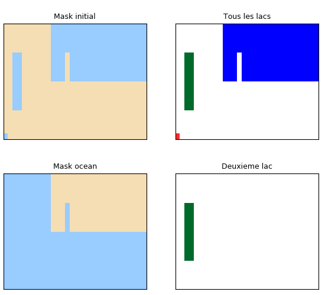

1.3.3.6.2.3. Gestion des lacs dans un masque¶
Voir : GetLakes

On détecte les différents lacs dans un masque. Les lacs sont d’abord distingués, puis le lac principal (océan) est tracé, puis le deuxième plus gros.
# Inits
from vacumm.misc.grid.masking import Lakes
from vacumm.misc.grid.misc import meshbounds
import vacumm.misc.color as C
from vacumm.misc.plot import savefigs
import numpy as N, pylab as P
P.figure(figsize=(5.5, 5))
P.subplots_adjust(bottom=.02, top=.92, left=.01, right=.98, hspace=.3)
cmap_mask = C.cmap_linear(((.6, .8, 1), C.land))
cmap_lakes = C.cmap_srs(('w', 'r', 'g', 'b'), stretch=0)
# Creer un mask avec des lacs
mask = N.ones((20, 30), '?') # Terre partout
mask[10:, 10:] = False # Ocean
mask[10:15, 13:14] = True # Ocean
mask[0, 0] = False # Ptit lac
mask[5:15, 2:4] = False # Gros lac
xxb, yyb = meshbounds(N.arange(mask.shape[1]*1.), N.arange(mask.shape[0]*1.))
xlim = (xxb.min(), xxb.max()) ; ylim = (yyb.min(), yyb.max())
P.subplot(221)
P.pcolor(xxb, yyb, mask.astype('i'), cmap=cmap_mask)
P.xlim(xlim) ; P.ylim(ylim) ; P.xticks([]) ;P.yticks([])
P.title('Mask initial')
# Identification des lacs
lakes = Lakes(mask)
m = lakes[0]
P.subplot(222)
P.pcolor(xxb, yyb, lakes.lakes(), cmap=cmap_lakes)
P.xlim(xlim) ; P.ylim(ylim) ; P.xticks([]) ;P.yticks([])
P.title('Tous les lacs')
# Le deuxieme lac seulement
P.subplot(224)
P.pcolor(xxb, yyb, lakes.lakes(2), cmap=cmap_lakes, vmax=lakes.nlakes)
P.xlim(xlim) ; P.ylim(ylim) ; P.xticks([]) ;P.yticks([])
P.title('Deuxieme lac')
# Ocean
P.subplot(223)
ocean = lakes.ocean()
P.pcolor(xxb, yyb, ocean, cmap=cmap_mask)
P.xlim(xlim) ; P.ylim(ylim) ; P.xticks([]) ;P.yticks([])
P.title('Mask ocean')
print 'La routine ocean marche ?'
print (ocean==lakes[0]).all()
# Save
savefigs(__file__, pdf=True)
P.close()